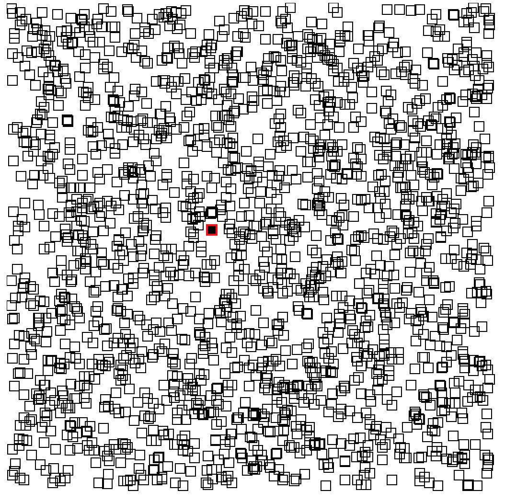

React Workshop - Vorbereitung
Falls noch nicht gemacht:
git clone https://github.com/DJCordhose/react-workshop.git- Im geklonten Verzeichnis:
npm install
(Dafür evtl. einen Proxy konfigurieren http://wil.boayue.com/blog/2013/06/14/using-npm-behind-a-proxy/) npm start- In neuem Terminal: in
code/workspacewechseln - Ausführen:
npm start - Browser öffnen: http://localhost:8080
- Wenn dort ein Hello-World-Text erscheint ist alles gut
Folien: Im geklonten Verzeichnis 2017_ix.html
React Workshop
Inhalt
Beispiel-Anwendung

Teil 0
React-Einführung und Build-Prozess
React
- Framework für Facebook und viele andere
- Komponenten kapseln Template und Logik
- Deklarativ
- Abstraktion vom DOM: f(model) -> UI
- Minimales API
- Ein-Weg-Data-Binding: Zustandsänderungen stellen Komponente komplett neu dar
- Kann im Browser und auf dem Server rendern
- wird für komplette Anwendung typischerweise mit React Router und einem Flux-Framework gekoppelt
- viel Inspiration aus der funktionalen Ecke (Immutable, pure functions, stateless)
React Komponenten
- Werden als ES6 Klasse oder Funktion implementiert
- Keine Templatesprache (stattdessen JavaScript)
- Templates können HTML-artige Syntax enthalten (JSX)
class HelloMessage extends React.Component {
render() {
return <h1 className='title'>Hello, World!</h1>
}
}
Eine erste Komponente: Hello, World!
DemoES6-Referenz
ES6 Features werden vorgestellt, wo wir sie brauchen
ES6: Template Strings
Template Strings werden in Backticks (``) geschrieben und können Ausdrücke
(in ${}) enthalten:
const name = "Susi";
const greeting = `Hello, ${name}`; // Hello, Susi
const four = `Two and two is: ${2+2}` // Two and two is: 4
const time = `The time is: ${new Date()}`); // The time is: ...
ES6: Klassen
class Person {
constructor(name) {
this._name = name;
}
get name() {
return this._name;
}
}
class Programmer extends Person {
constructor(name, language) {
super(name);
this.language = language;
}
code() {
return `${this.name} codes in ${this.language}`;
}
}const programmer = new Programmer('Erna', 'JavaScript');
console.log(programmer.code());
console.log(programmer instanceof Programmer); // true
console.log(programmer instanceof Person); // trueES6: Arrow Functions
const displayInPage = (text) => {
return document.body.innerHTML +=
`${text}
`;
};// Klammern können weggelassen werden, genau ein Parameter
// ebenso die geschweiften Klassen, wenn nur ein Statement:
const displayInPage = text => document.body.innerHTML += `${text}
`;
Hello World React
class HelloMessage extends React.Component {
render() {
return (<div>
<input onChange={event => this.updateModel(event)}
value={this.state.greeting} />
<p>{this.state.greeting}, World</p>
<button
onClick={() => this.reset()}>
Clear
</button>
</div>);
} constructor(props) {
super(props);
this.state = {greeting: this.props.greeting};
}
updateModel(event) {
this.setState({greeting: event.target.value});
}
reset() {
this.setState({greeting: ""});
}
}Aufruf
// index.html
<html>
<body>
</body>
<script src="dist/main.js"></script>
</html>
// main.js
import React from 'react';
import ReactDOM from 'react-dom';
import HelloMessage from './HelloMessage';
const mountNode = document.getElementById('mount');
ReactDOM.render(<HelloMessage greeting="Hello"/>, mountNode);
Buildprozess
- ES6- und JSX-Code muss nach ECMAScript 5 übersetzt werden
- Typische Werkzeuge
- Babel (Compiler)
- Webpack (Bundler)
- Webpack Dev Sever (HTTP Server mit Hot Reload)
Webpack und Babel

Webpack Development Server
- Zum Ausführen der Anwendung wird ein Webserver benötigt
- Für die Entwicklung Webpack Dev Server:
- ...führt Webpack auf Basis der Projekt Webpack Konfiguration aus
- ...erzeugt Ausgabe nur in Memory (nicht auf Platte)
- ...Hot Reloading: Automatische Aktualisierung nach Code Änderung
- ...React Hot Loader: Zustand bleibt nach Aktualisierung erhalten (Beta)
npm startin unserem Beispiel-Projekt
Übung: React Hello-World
Mach dich mit den Werkzeugen vertraut und schreib deine erste React-Komponente
Schritt #1: Tool-Chain starten (falls noch nicht gemacht)
Nutze für die Übungen das workspace-Verzeichnis in diesem Repository. Hier ist eine Tool-Chain mit Webpack und Babel vorbereitet
npm install(auf oberster Ebene)
(Dafür evtl. einen Proxy konfigurieren http://wil.boayue.com/blog/2013/06/14/using-npm-behind-a-proxy/)cd code/workspacenpm start- Öffne http://localhost:8080 im Browser
- Wenn auf der Seite 'Hello, World' steht, ist alles gut
Schritt #2: Deine erste React-Komponente
- Ersetze die "statische" Komponente (HelloMessage) mit der React-Komponente aus dem vorherigen Beispiel aus den Folien
- Experimentiere mit der Anwendung, mache einige Änderungen, wie z.B.
- Alle Eingaben sollen in Großbuchstaben auftauchen
- Gib irgendeine Rückmeldung wenn die Eingabe erfolgreich gelöscht wurde
Teil I
React-Komponenten und ES6 Grundlagen
Ziel-AnwendungThemen
- Rendering
- Properties und Zustand
- Refs
React: Rendering
Jede React-Komponente braucht einerender-Methode:
- wird aufgerufen beim ersten Rendering und immer wenn sich der Zustand ändert
- kann HTML-artige JSX-Syntax nutzen
- JSX kann pures JavaScript in geschweiften Klammern enthalten (
{})
class GreetingDetail extends React.Component {
render() {
return (
<input
onChange={event => this.updateModel(event.target.value)}
value={this.state.greeting} />
{this.state.greeting}, World
);
}
// ...
}
React: JSX
- Wird wie HTML hingeschrieben, inkl Attribute:
<div><input type="text"/></div> - Attribute, die keine Strings sind, müssen in {} eingechlossen werden:
<Counter label="Count" count={7} showValues={true} /> - Kann pures JavaScript enthalten, eingeschlossen in {}:
const title = 'Hello, World'; <h1>{title.toUpperCase()}</h1> class-Attribut heißtclassName:<h1 className="title">...</h1>- CSS-Eigenschaften werden als Objekt übergeben in Camel-Case-Notation:
const styles = { marginLeft: '10px', border: '1px solid red' }; <h1 style={styles}>...</h1>
React: Rendering #2
- DOM-Events werden in React-Events verpackt
- React-Events haben weitgehend selbe API wie DOM-Events
- Es gibt keine automatische Bindung an Modelle
class GreetingDetail extends React.Component {
render() {
return (
<input onChange={event => this.updateModel(event.target.value)}
value={this.state.greeting} />
{this.state.greeting}, World
);
}
updateModel(greeting) {
this.setState({greeting});
}
// ...
}
ES6: Erweiterte Objekt-Literale
const name = 'Oma';
const person = {
// ES5: name: name
name
};
console.log(person.name); // Oma
ES6: Computed Properties
Berechnete Keys in Objektenconst schluessel = 'name';
const person = {
[schluessel]: 'Klaus'
};
console.log(person.name); // Klaus
let id = 1;
const personen = {
[`id_${id++}`]: 'Klaus',
[`id_${id++}`]: 'Susi'
};
console.log(personen); // Object {id_1: "Klaus", id_2: "Susi"}
ES6: Module, Importe und Exporte
ES6: Export einer einzigen Klasse
// Person.js
class Person {
// ...
}
export default Person;
// Person.js
// in einer Zeile zusammengefasst
export default class Person {
// ...
}
ES6: Import
// Programmer.js
import Person from './Person';
export default class Programmer extends Person {
// ...
}
ES6: Benannte Exporte
// util.js
export function displayInPage(text) {
document.body.innerHTML +=
`${text}
` ;
}
export showInfo = msg => window.alert(`Wichtige Info: ${msg}`);
// or
function displayInPage(text) { . . . }
const showInfo = ...;
export { displayInPage, showInfo };
import {displayInPage} from "./util";
displayInPage('Hello, World');
ES6: Destructuring von Objekten
const person = {
name: 'Olli',
email: 'oliver.zeigermann@gmail.com'
};const {name, notThere} = person;
console.log(`name=${name}`);
// name=Olli
console.log(`notThere=${notThere}`);
// notThere=undefined
function someFunction({name, notThere}) {
console.log(`name=${name}`);
// name=Olli
console.log(`notThere=${notThere}`);
// notThere=undefined
}
someFunction(person);
React: Properties und Zustand
- Properties werden der Komponente von außen übergeben (und nicht verändert)
- Zustand (State) ist eine innere Eigenschaft der Komponente (die verändert werden kann)
- Beides sind Objekte mit Key-Value-Paaren
- Beide können an Unterkomponenten übergeben werden
Properties einer Komponente
- Properties werden von außen über den Konstruktor übergeben
- Properties dürfen nicht verändert werden
- Zugriff über
this.props this.props.childrenenthält Kind-Elemente
class TitleComponent extends React.Component {
constructor(props) {
super(props);
}
render() {
return <h1>{this.props.title}</h1>
}
// ...
}
<TitleComponent title='Hello World' />
Zustand einer Komponente
- Beispiel: Inhalt eines Eingabefelds, Daten vom Server
- Werte üblicherweise immutable
- Initialisieren im Konstruktor mit
this.state={} - Zustand lesen über
this.state - Zustand setzen über
this.setState()- Achtung: kein "reiner" Setter
- Führt alten und neuen Zustand zusammen
- Wird asynchron ausgeführt!
- Löst erneutes rendern der gesamten Komponente aus
Beispiel: Zustand einer Komponente
class GreetingDetail extends React.Component {
constructor(props) {
super(props);
this.state = { name: 'Klaus' };
}
updateModel(event) {
// Zustand ändern: Komponente wird neu gerendert
this.setState({name: event.target.value});
}
render() {
return <input name="name"
value={this.state.name}
onChange={e => this.updateModel(e)} />
}
// ...
}
Render Zyklus

Virtual DOM

React: Referenzen auf nativen DOM
Elementen kann eine Callback-Funktionref übergeben werden
- Funktion wird nach dem Rendern mit Referenz auf DOM Element aufgerufen (oder
null) - Diese Referenz kann man z.B. als Member-Variable speichern
class HelloMessage extends React.Component {
render() {
return (
<div>
<input ref={inputNode => this.inputNode = inputNode} />
<button
onClick={() => this.inputNode.focus()}>
Focus
</button>
</div>);
}
}
Übung: Detail-Ansicht für unsere Gruß-Anwendung
Erzeuge eine Komponenten mit der man einen Namen und eine Grußformel eingeben kannSchritte
Erweitere deine erste React-Komponente im workspace-Ordner
- benenne deine Komponente in
GreetingDetailum - du brauchst zwei Eingabefelder, die
nameundgreetingim Zustand der Komponente setzen - Kannst du die Komponente so bauen, dass du mit einer einzigen update-Methode beide Felder im Zustand updaten kannst?
- Erweitere deine Komponente so, dass man von außen Properties übergeben kann, die den Zustand initialisieren
Teil II
Komponentenhierarchien
Komplette Anwendung aus Komponenten bauenThinking in React
https://facebook.github.io/react/docs/thinking-in-react.html
Themen
- Komponenten als Funktion
- Darstellung von Listen und Keys
- Architektur-Idee: Controller-Komponente und View-Komponente
- Durchreichen von Zustand und Callbacks
- PropTypes
Komponenten als Funktion
Komponenten können auch als reguläre JavaScript Funktion geschrieben werden- entspricht der
render-Methode - Properties werden per Parameter in einem Objekt übergeben
- Zurzeit nur ohne Zustand und ohne Lifecycle-Methoden
- Empfehlung: Funktionen statt Klassen verwenden (wenn möglich)
Komponenten als Funktion
import React from 'react';
function Greet(props) {
return (
<div>
<h1>{props.greeting}</h1>
<h2>{props.name}</h2>
</div>
);
}
// Verwendung:
<Greet name="Susi" greeting="Hello" />
Komponenten als Funktion
// Mit Destructuring
function Greet({greeting, name}) {
return (
{greeting}
{name}
);
}
// Als Arrow Function
const Greet = ({greeting, name}) =>
{greeting}
{name}
}
Listen und Keys
- JSX bietet nichts für Listen
- Ausgabe typischerweise über
Array.map - Elemente einer Liste brauchen einen eindeutigen key
const greetings = [{
id: 0,
name: 'Olli',
greeting: 'Huhu'
},
{
id: 1,
name: 'Oma',
greeting: 'Hallo'
}
];
const body = greetings.map(greeting =>
<tr key={greeting.id}>
<td>{greeting.name}
<td>{greeting.greeting}
</tr>);
Komponenten in Hierarchien
Beispiel: Unsere Anwendung

Controller und Child-Views

Durchreichen vom Zustand und Callbacks
- Funktioniert beides über Properties
class GreetingController extends React.Component {
render() {
const {greetings} = this.state;
return (
<GreetingMaster greetings={greetings}
onAdd={() => this.setState({mode: MODE_DETAIL})}
);
}
// ...
}
Properties übergeben mit Object-Spread
- Übergibt alle Eigenschaften eines Objektes als individuelle Properties
class GreetingController extends React.Component {
const greeting = { name: 'Klaus', greeting: 'Hello' };
render() {
return <GreetingDetail {...greeting} />
// entspricht:
// <GreetingDetail name='Klaus' greeting='Hello' />
}
}
PropTypes
Eine Komponente kann deklarieren, welche Properties sie erwartet- Name und Typ wird angegeben (Mögliche Typen)
- Fehlende / falsche Properties führen zu Laufzeitfehlern
- Ab React 15.5 eigenes npm modul:
prop-types - Alternative: Typsystem (Flow oder TypeScript)
import PropTypes from 'prop-types';
class GreetingDetail extends React.Component { . . . };
GreetingDetail.propTypes = {
greeting: PropTypes.shape({
name: PropTypes.string.isRequired,
greeting: PropTypes.string.isRequired
}),
onSave: PropTypes.func.isRequired
};
PropTypes
Mit statischen Properties (static noch kein JS Standard!)
import PropTypes from 'prop-types';
class GreetingDetail extends React.Component {
static propTypes = {
greeting: PropTypes.shape({
name: PropTypes.string.isRequired,
greeting: PropTypes.string.isRequired
}),
onSave: PropTypes.func.isRequired
};
render() { . . . }
};
PropTypes
Für Komponenten als Funktionen
import PropTypes from 'prop-types';
function HelloMessage(text) { . . . }
HelloMessage.propTypes = {
text: PropTypes.string.isRequired
}
Übung: Eine komplette Anwendung zusammen setzen
Füge deinen bestehenden Detail-View (GreetingDetail) und einen Master-View über eine Controller-Komponente zusammen
Schritte
- kopiere das Material aus
code/material/2-hierarchyin deinen src-Ordner - erweitere im
GreetingControllerdie render-Methode, so dass deinGreetingDetailangezeigt wird, wenn der Benutzer den Add-Button klickt:- dort gibt es bereits einen Kommentar, der dir die richtige Stelle anzeigt und weitere Details enthält
- übergib einen Callback der
addGreetingnutzt
- im deinem
GreetingDetailbrauchst du einen neuen Knopf, der mit dem neuen Gruß den Callback aufruft
(Du kannst deinGreetingDetailverwenden, oder die Vorlage code/material/2-hierarchy/src/_GreetingDetail.js verwenden)
Architektur Beispiel-Anwendung

GreetingMaster

GreetingDetail

Teil III
Remote-Calls gegen Server
Ziel-AnwendungHerausforderungen
- Wo speichern wir?
- Wie machen wir das Laden und Speichern technisch?
- Wie funktioniert asynchrone Verarbeitung in React?
- Wo steht der Code zum initialen Laden der Grüße?
Server-Calls
- React macht keine Angabe, wie Server-Calls (technisch) gemacht werden
- Häufig in React verwendet: fetch API
- Browser-API zum Ausführen von HTTP Requests
- Hohe Verbreitung
- Spezifikation: https://fetch.spec.whatwg.org/
- Polyfill: https://github.com/github/fetch
fetch
Browser-API zum Laden und Speichern von Daten
fetch(url, {
method: 'PUT',
headers: {
'Accept': 'application/json',
'Content-Type': 'application/json'
},
body: JSON.stringify(payload)
})
.then(response => response.json())
.then(json => /* ... */)
.catch(ex => console.error('request failed', ex));
ES6: Promises
Beispiel: fetch
const url = `${BACKEND_URL}${path}`;
return fetch(url)
.then(response => response.json())
.then(json => /* ... */)
.catch(ex => console.error('request failed', ex));
Ein Promise ist ein Versprechen auf einen Wert
Wird evtl. erst in der Zukunft eingelöst
Fehler führen zum Abbruch der Chain
Allerdings muss man etwas tun, um das mitzubekommen
Catch-Klausel im Fehlerfall
Promise
// creates and directly resolves promise
.resolve('Result from promise')
.then(x => {
// this will be printed
console.log(x);
throw new Error('Something went wrong');
})
.then(() => {
console.log('This will NOT be printed');
})
// this will be printed
.catch(e => console.log('error: ', e))
// Output:
// Result from promise
// error: [Error: Something went wrong]fetch im Detail
// 1. fetch returns a promise, that will be resolved
// with a Response object when response is received
// from server
fetch('http://localhost:7000/greetings')
// 2. the Response object contains a json() function,
// that returns the parsed JSON from the Response body
.then(response => response.json())
// 3. with the resolved JSON object we set the
// component state (=> leads to re-rendering)
.then(json => this.setState({greetings: json})
// 4. in case something goes wrong (during request,
// request processing or rendering)
.catch(ex => console.error('request failed', ex));
// as an alternative we could set and render an error msg:
// .catch(ex => this.setState({error: ex})
Initiales Laden von Daten
- Komponenten können Lifecycle-Methoden haben: https://facebook.github.io/react/docs/react-component.html#the-component-lifecycle (nur Klassen!)
componentDidMountwird aufgerufen, wenn Komponente ins DOM gerendert wurde- Hier werden Daten üblicherweise initial geladen:
class GreetingController extends React.Component { constructor(props) { // intial state (empty now) this.state = { greetings: [] }; } componentDidMount() { fetch('/greetings') .then(response => response.json()) .then(json => this.setState({greetings: json}) .catch(. . .) ; } }
Speichern von Daten
Zum Beispiel als Folge einer Benutzerinteraktion:
class GreetingController extends React.Component {
render() {
...
<GreetingDetail onSave={greeting => this.saveGreeting(greeting)} />
...
}
saveGreeting(greetingToBeSaved) {
fetch('/greetings', {
method: 'POST',
headers: ...,
body: JSON.stringify(greetingToBeSaved)
})
.then(response => response.json())
.then(json => ...)
.catch(. . .);
}
}
Übung: Laden und Speichern der Daten von/auf einem Server
Entwickle auf Basis von fetch eine Version des GreetingControllers, der die Daten auf dem Server laden und dort wieder speichern kann
Der Server ist bereits vorgegeben und kann mit npm start im Root-Verzeichnis gestartet werden. Er ist dann unter Port 7000 erreichbar
Schritte
Kopiere code/material/3-remote/GreetingController.js in deinen Arbeitsbereich
Die Serverzugriffe sollen in loadGreetings und saveGreeting erfolgen
Dort sind bereits entsprechende TODOs für dich eingetragen
Teil IV
Integration mit 3rd-Party Bibliotheken
Ziel-Anwendung3rd Party Libs?
Es gibt eine große Anzahl von sehr praktischen JavaScript-Bibliotheken
Viele davon sind aber nicht als React-Komponenten entwickelt worden
Beispiele
jQuery und jQuery Plugins wie z.B. Bootstrap
d3 für interaktive SVGs und Chart Bibliotheken wie nvd3
Unser Beispiel: Verteilung der Grüße

nvd3 Pie Chart mit d3
Aufgabe: Einbetten des Pie Charts in eine React-Komponente
Herausforderungen?
- Wie kommen wir an den DOM Knoten der React-Komponente?
- Wie sagen wir React, dass nun NVD3 den Rest macht? Also, dass React nicht mehr neu rendern soll.
- Änderungen des Zustands sollen nach wie vor richtig dargestellt werden
- Ab welchem Zeitpunkt soll NVD3 das Rendern übernehmen?
- Wie können wir aus NVD3 heraus auch wieder andere React-Komponenten beeinflussen?
- Wie räumen wir wieder auf?
Hintergrund: Charts mit NVD3
Basiert auf D3.js
Benötigt svg DOM-Element um sich zu rendern
Stark vereinfachtes Beispiel:
import d3 from 'd3';
import nv from 'nvd3';
// Chart erzeugen
const chart = nv.models.pieChart();
// ...Chart Config ausgelassen ...
// mit d3 rendern und mit Daten versorgen
const element = document.getElementById('chart');
d3.select(element)
.datum(data)
.call(chart);
// Callbacks registrieren (z.B. bei Klick auf ein Element)
chart.pie.dispatch.on("elementClick",
e => console.log(e.data.label));
Übersicht über den Komponenten-Lifecycle
https://facebook.github.io/react/docs/react-component.html#the-component-lifecycleReact Lifecycle Methoden
componentDidMount(): Komponente wurde gerendert, Elemente sind im DOM (einmalig)componentWillReceiveProps(nextProps): An die Komponente wurden neue Properties übergeben. Die neuen Properties werden als Parameter übergebenshouldComponentUpdate(): Entscheidet, ob Komponente erneut gerendert werden soll (default:true)componentWillUnmount(): Wird aufgerufen, bevor Komponente aus dem DOM entfernt wird (einmalig)
React Chart Komponente #1
class Chart extends React.Component {
render() {
// (1) we render an empty svg and
// remember the reference to the DOM node
return <svg ref={c => this._chart = c}></svg>
}
shouldComponentUpdate() {
// (2) once rendered react never renders again
return false;
}
componentWillReceiveProps(nextProps) {
const {data} = nextProps;
// (3) we still get updates of properties making it reactive
updateNvd3Chart(this._chart, data);
}
// ...
}
React Chart Komponent #2
class Chart extends React.Component {
// ...
componentDidMount() {
const {data, onSegmentSelected} = this.props;
// (4) once rendered by react we create the nvd3 chart
const chart = createNvd3Chart(this._chart, data);
// (5) we delegate the label of clicked segment
// back to parent component
if (onSegmentSelected) {
chart.pie.dispatch.on("elementClick",
e => onSegmentSelected(e.data.label));
}
}
// (6) called just before destroying component
componentWillUnmount() {
this._d3selection.remove();
}
}
Übung: Ein Pie-Chart integrieren
Das Pie Chart soll eine Übersicht aller Grüße anzeigen
Ein Klick auf ein Segment des Pie Charts soll die Liste der Grüße filtern
Schritte
- kopiere das Material aus
code/material/5-third-partyin deinen src-Ordner - binde die Chart-Komponente in die render-Methode des
GreetingControllerein - alle Stellen die du ändern musst sind dort bereits mit einem Kommentar versehen
- logge jeden Aufruf einer Lifecycle-Methode in der Chart-Komponente und versuche damit die Reihenfolge der Aufrufe zu durchschauen
Zusatzaufgabe: Ein zweites Mal klicken auf das Segment soll den Filter wieder löschen
Zustands-Management mit Redux

Über Komponenten verteilter Zustand

Render Cycle in Pure React

Motivation für Zustandsmanagement
Zustand, der über viele Komponenten verteilt ist, macht Programme kompliziert
Gemeinsame Nutzung von State in unterschiedlichen Komponenten-Hierarchien ist schwierig
Zustandmanagement und UI-Handler werden aus React-Komponenten extrahiert
Besseres SoC
Redux extrahiert die Verantwortlichkeiten

Zwischenübung
Schreibe die erste Hello-World Anwendung auf Redux um
Im ersten Schritt tust du dies im Plenum mit den Workshop-Leitern
Dabei lernst du anhand des Live-Codings alle Bestandteile der Redux-Architektur kennen
Dazu erstellen wir zusammen eine Übersicht über alle notwendigen Teile spezifisch für die Hello-World Anwendung
Im zweiten Schritt baust du die Anwendung unter code/material/hello-world selbst noch einmal um
Strukturierter Überblick über alle Redux Teile
Event-Handlers werden Action-Creators
export const setFilter = filter => {
return {
type: SET_FILTER,
filter
};
}
- Action-Creators erzeugen Action-Objekte
- Actions sind Kommando-artige Strukturen von Dingen, die die Applikation tun soll
- Über die dispatch-Methode des Stores werden sie an alle Reducer weiter gegeben
- Actions bestehen aus einem Typen und einer beliebigen Nutzlast (payload)
Action-Creators machen Server-Calls
export const loadGreeting = greetingId => dispatch => {
fetch(BACKEND_URL+'/'+greetingId)
.then(response => response.json())
.then(greetings => dispatch({
type: SET_GREETINGS,
greetings
});
};
- Die Action wird nicht direkt zurück geliefert, sondern erst später dispatched
- wir bekommen die dispatch Methode als Parameter, mit der wir später die Action dispatchen
- getState als zweiter Parameter, um den kompletten State abzufragen
Action-Creators sind die einzigen Teile einer Redux-Anwendung, die asynchrone Operationen ausführen dürfen
Ein einziger Store hält den kompletten Zustand
import { Provider } from 'react-redux';
import { createStore } from 'redux';
import { rootReducer } from './reducers';
// http://redux.js.org/docs/api/createStore.html
const store = createStore(
rootReducer // reducer
);
ReactDOM.render(
<Provider store={store}>
<GreetingController />
</Provider>,
mountNode
);
- Zentraler Teil der Anwendung
- Liefert die bereits bekannte dispatch-Methode
- Der Store wird allen Componenten über die Wrapper-Komponenten Provider zur Verfügung gestellt
Middleware zwischen Dispatch und Store
import { applyMiddleware } from 'redux';
import thunk from 'redux-thunk';
const store = createStore(
rootReducer, // reducer
applyMiddleware(thunk) // middleware as enhancer
);
- Die Thunk Middleware dient als de-facto-Standard
- Gibt die dispatch-Methode and (asynchrone) Action Creators weiter
- 'A thunk is a function that wraps an expression to delay its evaluation'
- Middleware ist ein fortgeschrittenes Feature und meistens genügt die Thunk Middleware
- Redux Dev Tools klinken sich über denselben Mechanismus ein
Reducers enthalten die Kern-(Business)-Logik
import {combineReducers} from 'redux';
// http://redux.js.org/docs/api/combineReducers.html
export const rootReducer = combineReducers({
greetings, // updates greeting partial state
filter,
mode
});
- Reducer sind pure Funtionen, die den alten Zustand und eine Action bekommen und einen neuen Zustand erzeugen
- Oft bearbeitet ein Reducer nur einen Teil des Zustands
Teil-Reducer
const mode = (state = MODE_MASTER, action) => {
switch (action.type) {
case SET_MODE:
return action.mode;
default:
return state;
}
};
- Initialisiert seinen Teilzustand (oft mit einem Default-Parameter)
- Ändert niemals zustand direkt
- Sondern liefert einen neuen Zustand (manchmal teilweise als Kopie)
Zustand mit Komponenten verbinden
import { connect } from 'react-redux';
import * as actions from './actions';
export default connect(
state => ({
mode: state.mode
// ...
}),
actions
)(GreetingController);
- der Provider gibt den Store in alle Komponenten
- Die Connect-Funktion extrahiert daraus Zustand, der als Property an Komponenten übergeben wird
- Action-Creators können ebenso in Komponent gegeben werden
Verwendung von Zustand und Action-Creators in verbundenen Komponenten
class GreetingController extends React.Component {
render() {
// state from store
const {aggregatedGreetings, greetings, mode} = this.props;
// action creators bound to dispatch from store
const {setMode, saveGreeting, setFilter} = this.props;
// ...
}
}
- Action-Creators und Zustand werden in Properties hinein gemerged
- Diese werden mit ES6-Destructuring an den Stellen aufgelöst wo wir sie brauchen
- Die Komponenten wird nur neu gerendert wenn sich der benutzte Zustand verändert
Selektoren
export const selectGreetings = ({greetings}) => greetings;
export default connect(
state => ({
greetings: selectGreetings(state),
// ...
}),
// ...
)(GreetingController); - Berechnen abgeleiteten Zustand
- Oft in einer eigener Datei
- Erlauben Wiederbenutzung und Caching (normalerweise reselect)
Zusammenfassung Redux-Architektur

Übung: eine Redux Anwendung fertig stellen
Es gibt bereits eine vorgebaute Redux-Anwendung, aber die Filterung über das Chart muss noch implementiert werden
Schritte
- Alles Material von
code/material/6-reduxin deinem Source-Ordner kopieren - TODOs leiten dich, die bereits in den Actions, den Reducers und dem GreetingController eingefügt sind
- Erzeuge einen neuen Action-Typ und einen Action-Creator für das Setzen des Filters
- Füge einen passenden Reducer zur Behandlung einer solchen Action hinzu und füge ihn als Teil-Reducer in
combineReducershinzu - Reiche den Action-Creator von
GreetingControllerin die Chart-Komponente in der du auf das Filter-Event reagierst
Laufzeit-Optimierungen
https://facebook.github.io/react/docs/optimizing-performance.html
Beispiel: SVG Boxes
Eine einzelne Box mit D'n'D verschieben
Change Detection auf der Ebene des Virtual DOM
bei jeder Bewegung der Maus werden alle Boxen neu gerendert
Nicht direkt im DOM, sondern in einer leichtgewichtigen Datenstruktur (Virtual DOM)
Änderungen im echten DOM werden aus Änderungen im Virtual DOM errechnet
Change Detection auf der Ebene des Models
shouldComponentUpdate ist eine Lifecycle-Methode einer Komponente die diese Prozedur abkürzen kann
das alte Modell kann mit dem neuen verglichen werden
immutable data structures (immutable.js) können den Vergleich beschleunigen
Die Box Component
class Box extends React.Component {
shouldComponentUpdate(nextProps) {
// simple check: every change to a box creates a new object
const changed = this.props.box !== nextProps.box;
return changed;
}
render() {
const {box} = this.props;
return <rect data-id={box.id} x={box.x} y={box.y}
width="10" height="10"
stroke="black" fill="transparent" strokeWidth="1"/>;
}
}
Naiver Code für Modifikation einer Box
updateBox(id, x, y) {
const {boxes} = this.state;
const modifiedBox = {
id,
x,
y
};
// https://developer.mozilla.org/en-US/docs/Web/JavaScript/
// Reference/Global_Objects/Array/slice
const boxesBefore = boxes.slice(0, id);
const boxesAfter = boxes.slice(id + 1);
const modifiedBoxes = [...boxesBefore, modifiedBox, ...boxesAfter];
this.setState({
boxes: modifiedBoxes
});
}
Immutable.js
Immutable persistent data collections for Javascript which increase efficiency and simplicity.
http://facebook.github.io/immutable-js/
- Bietet List, Set, Map, etc.
- Jede Modifikaton einer Collection erzeugt ein neues Collection Objekt
- Kopiert nicht die komplette Collection, sondern effiziente Erzeugung mittels Persistent Data Structures
Mit immutable.js
import {List} from 'immutable';
this.state = {
boxes: List(boxes)
};
updateBox(id, x, y) {
const {boxes} = this.state;
const modifiedBox = {
id,
x,
y
};
const modifiedBoxes = boxes.set(id, modifiedBox);
this.setState({
boxes: modifiedBoxes
});
}
Build-Optimierungen
Minifizieren, Optimieren und alle React-Warnungen herauskompilieren:
webpack --optimize-minimize --define process.env.NODE_ENV=\"'production'\"
Oder als Kurzform:
webpack -p
https://webpack.js.org/guides/production-build/
(NODE_ENV="production" wird nicht in der webpack.config gesetzt!)
Build-Optimierungen
"Tree Shaking": Entfernt toten Code aus dem generierten JavaScript File- Reduziert die Größe der Ausgabedatei
- Verfügbar in Webpack 2.x
- Automatisch eingeschaltet, wenn mit
-paufgerufen - Arbeitet auf Basis statischer Code-Analyse der ES6 Imports und Exports
- Anpassung in
.babelrc:"presets": [["es2015", { "modules": false }]
Code Splitting
Asynchrones Nachladen von Modulenhttps://webpack.js.org/guides/code-splitting-async/
- Erlaubt das dynamische Nachladen von Code-Teilen
- So kann am Anfang für eine schnelle Ladezeit nur eine Minimalversion ausgespielt werden
- Basiert auf dynamic import, der bereits in Stage 3 ist
- Weitere Teile können unmittelbar oder erst nach Nutzerinteraktion nachgeladen werden
Beispiel Code
npm install babel-plugin-syntax-dynamic-import --save
// .babelrc
"plugins": ["syntax-dynamic-import", ...]
// calculator.js
export default function calculator(a, b) {
return a+b;
}
import('./calculator')
.then(calculatorModule => {
// import calculator from './calculator';
const calculator => calculatorModule.default
console.log(calculator(7, 8));
});
Nachladen von React-Komponenten
- Erfordert die Darstellung von Platzhaltern, bis die eigentliche Komponente da ist
- Wenn die Komponente da ist, muss die umschließende Komponente neu dargestellt werden
- forceUpdate erzwingt ein Neuladen
class AsyncComponent extends React.Component {
componentDidMount() {
import('./Component').then(ComponentModule => {
this.Component = ComponentModule.default;
this.forceUpdate();
});
}
render() {
return this.Component ?
<this.Component /> :
<span>Loading...</span>;
}
}
Übung
Baue deine Anwendung so um, dass die Detail-Ansicht erst bei Bedarf nachgeladen wird
Beginne mit der Version in code/schritte/redux/8-redux-prod-build, die bereits ein Produktionsbuild bietet